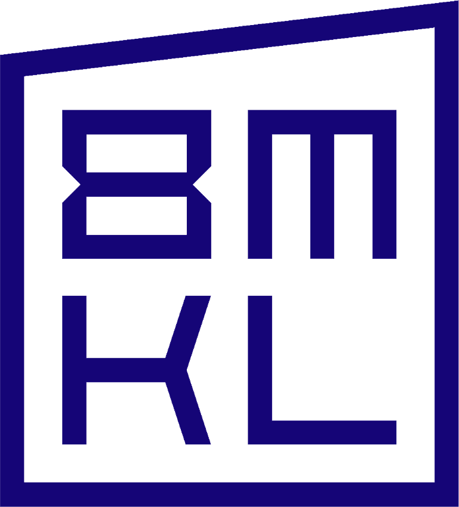
IIS 8 MARZO – K. LORENZ · MIRANOINDIRIZZO AGRARIO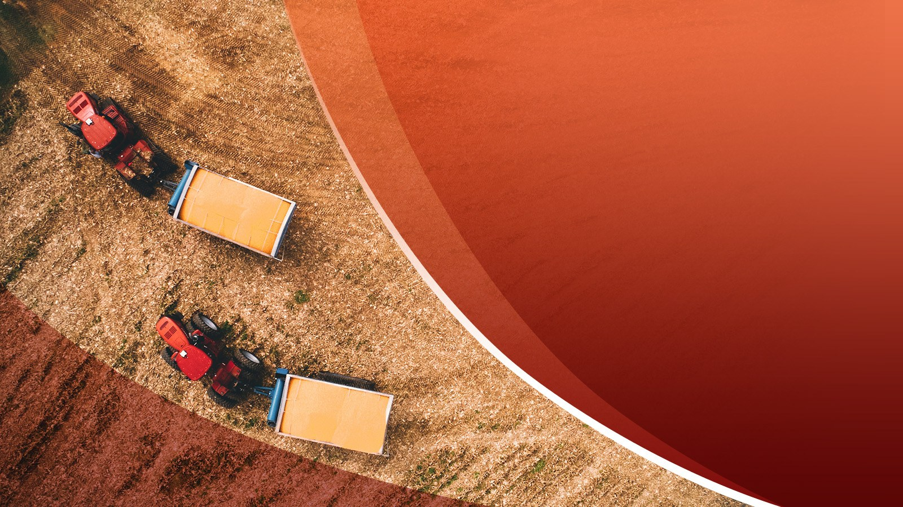
MIRANO · ORIENTAMENTO 2026–2027
Istituto Agrario
K. Lorenz.Il futuro
si coltiva.
Scienza, ambiente e tecnologia.
Con le mani, con la testa.
UNA SCUOLA, DUE AMBIENTI CHE DIALOGANO
Dentro e fuori dall’aula.
Le conoscenze prendono forma quando puoi metterle alla prova.
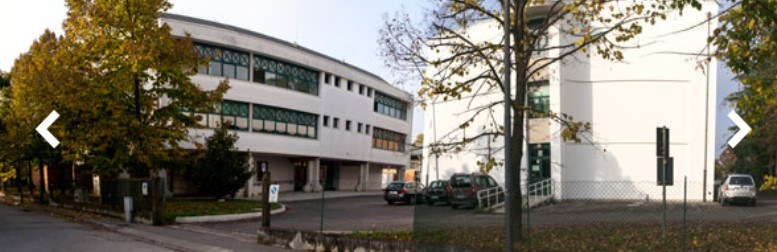
La sede Lorenz
Aule, studio, confronto e laboratori.
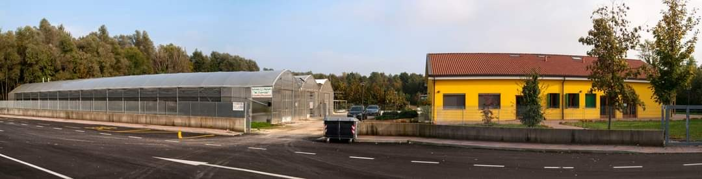
L’azienda agraria
Un grande laboratorio all’aperto e in serra.
DUE PERCORSI, PARI VALORE
Qual è il tuo modo di imparare?
Capire.
Misurare.
Progettare.
Collega scienze, tecnologie e gestione delle produzioni e dell’ambiente.
Osservare.
Fare.
Migliorare.
Sviluppa competenze operative attraverso problemi concreti e attività di laboratorio.
In entrambi si studia, si ragiona e si sperimenta. Cambia l’accento, non il valore.
IL PERCORSO TECNICO
Dalla domanda
al progetto.
Capire come funzionano le cose.
Usare i dati per scegliere.
Scienze e tecnologie
Suolo, piante, produzioni, alimenti e ambiente: sistemi da conoscere e gestire.
Una domanda concreta
Una coltura ha poca acqua: osservi, misuri e confronti le soluzioni.
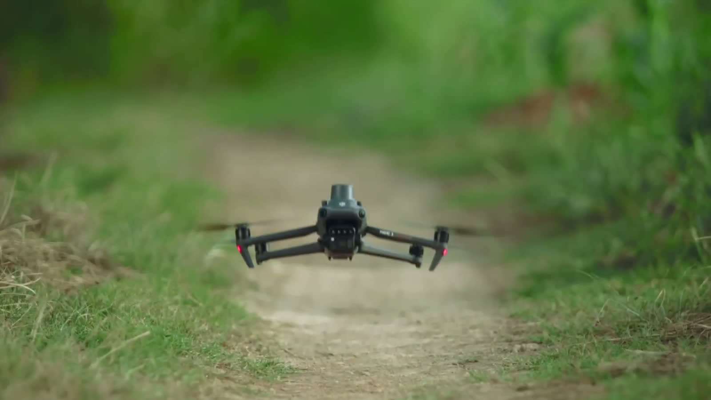
Imparare a motivare una scelta.
Sequenze dal filmato di orientamento dell’istituto · 2024IL TECNICO · LE AREE DI INTERESSE
Produzioni e ambiente.
Due grandi direzioni per leggere l’agricoltura di oggi.
Dalla coltura al prodotto
Coltivazioni, trasformazioni, qualità e valorizzazione delle produzioni agroalimentari.
Dal suolo al territorio
Risorse naturali, paesaggio, sostenibilità e gestione dell’ambiente agrario.
Riferimenti nazionali: “Produzioni e tecnologie agroalimentari per il made in Italy” e “Scienze agrarie e ambientali” — DM 29/2026, allegato C3. Non è un elenco definitivo dell’offerta locale.
IL PERCORSO PROFESSIONALE
Il lavoro
si impara
sul campo
Lavorazioni e attrezzature
Preparare il terreno, curare le colture e capire come usare i mezzi in sicurezza.
Competenze concrete
Dalla floricoltura alla cura del verde: organizzare il lavoro e controllare il risultato.
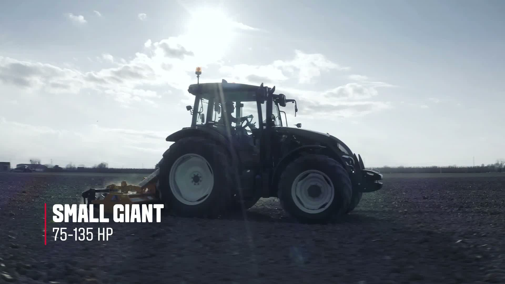
Meccanizzazione agraria · Valtra*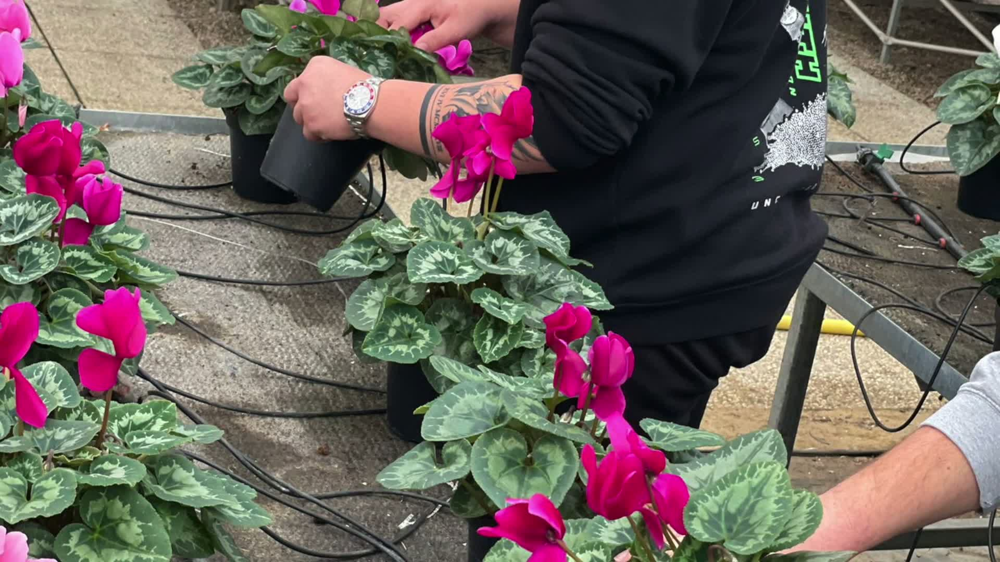
Cura del verde · attività dell’istituto*Fotogramma del filmato Valtra nell’archivio di orientamento: illustra il mezzo, non documenta un allievo alla guida né identifica il singolo trattore di proprietà scolastica.
L’AZIENDA AGRARIA
Un grande laboratorio,
dentro e fuori le serre
complessivo: seminativo,
vigneto e fruttetto didattico.
nel primo corpo aziendale.
Coltivazioni, schiusa, acquaponica e trasformazioni nello stesso ambiente di apprendimento.
AZIENDA AGRARIA E TERRITORIO
Lo spazio per imparare si allarga.
Il primo corpo aziendale
Serre, seminativo, vigneto e fruttetto didattico.
Altri campi poco distanti
Raggiunti con il trasporto organizzato dalla scuola.
Il Bosco del Parauro, proprio accanto
Confiniamo direttamente con il bosco: un contesto per le attività delle discipline attinenti.
IL LABORATORIO DI SCHIUSA
Dall’uovo
al pulcino
La biologia diventa
un’esperienza da osservare.
Seguire lo sviluppo
Osservare i cambiamenti e registrare quello che accade.
Imparare la cura
Controllare le condizioni e seguire le procedure con attenzione.
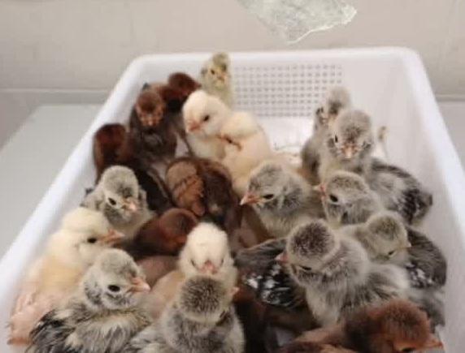
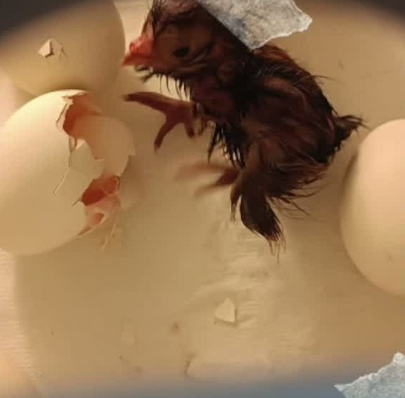
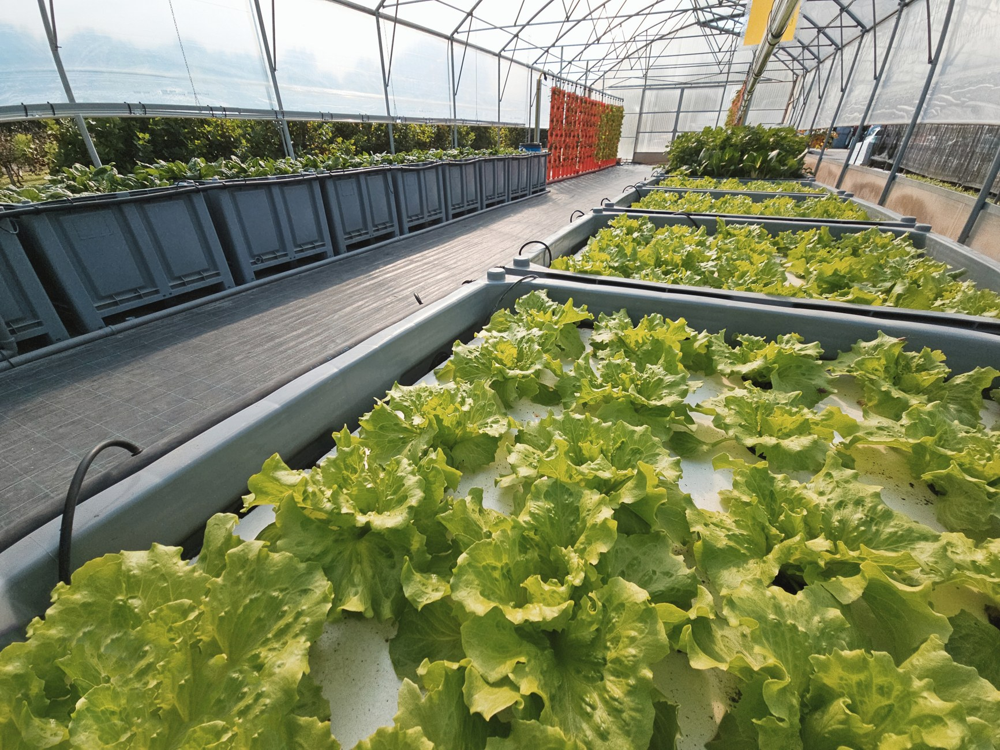
LA NOSTRA SERRA ACQUAPONICA
Dentro
un ecosistema
che funziona
Pesci e colture senza suolo.
Un circuito che collega
biologia e tecnologia.
scolastico in Italia.*
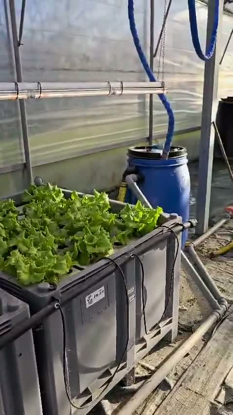
Il filmato del nostro impianto*Primato indicato nella presentazione d’istituto del novembre 2024. Filmato tratto dalla presentazione “Serra acquaponica – discussione dipartimento”.
IL SISTEMA ACQUAPONICO
Ogni parte ha una funzione
I pesci
Producono sostanze di scarto che entrano nell’acqua.
I microrganismi
Contribuiscono a trasformarle in nutrienti utilizzabili.
Le piante
Assorbono nutrienti mentre l’acqua circola nel sistema.
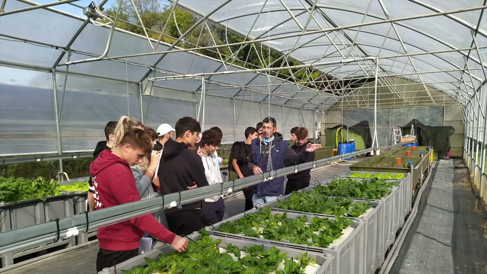
Una lezione nel nostro impianto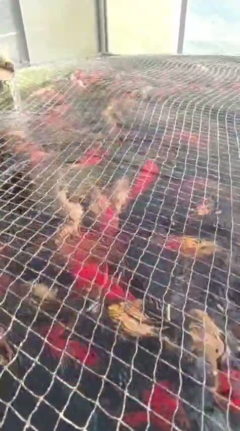
I pesci del nostro impiantoDENTRO IL LABORATORIO-CONTENITORE
Dalla materia prima
al prodotto.
Nel laboratorio di trasformazioni si studia ciò che accade agli alimenti durante la lavorazione.
Osservare il processo
Ingredienti, fasi operative, igiene, parametri e qualità del risultato.
Con una tecnologia avanzata
Il dispositivo RoboQbo permette di avvicinarsi al controllo tecnologico delle trasformazioni.
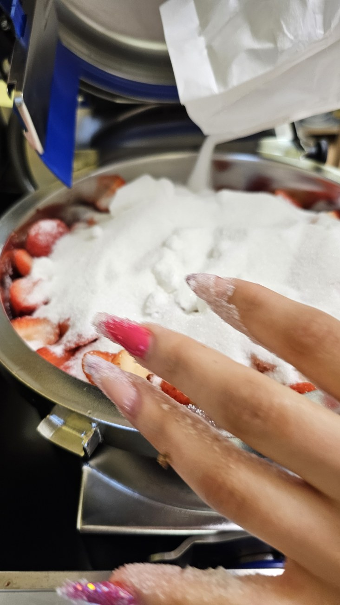
Una lavorazione reale nel laboratorio · aprile 2024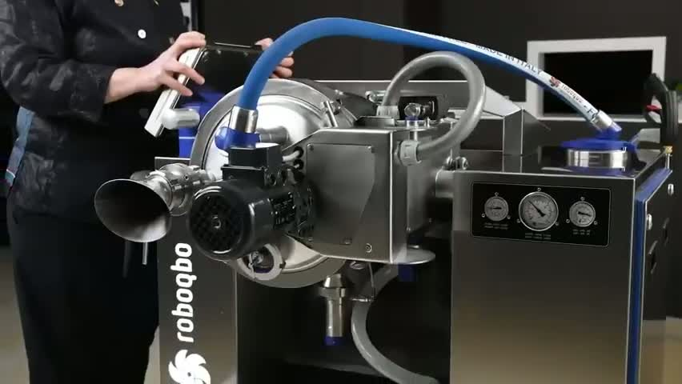
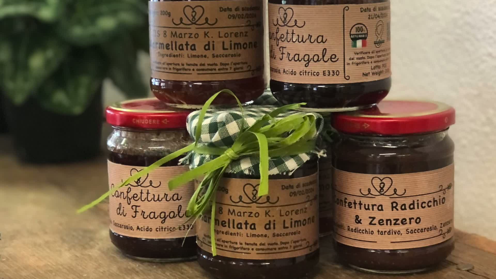
IN SEDE LORENZ
Il piccolo diventa visibile.
I dati diventano strumenti.
Osservare ciò
che non vedi.
Collegare microrganismi, produzioni e qualità attraverso le attività didattiche.
Organizzare.
Leggere. Comunicare.
Usare strumenti digitali per elaborare dati e presentare il proprio lavoro.
DOPO I CINQUE ANNI
Più strade restano aperte.
Tecnico e professionale sono entrambi percorsi di istruzione secondaria di secondo grado.
Lavoro
Produzioni agricole, servizi, trasformazioni e cura del territorio: ruoli coerenti con le competenze acquisite.
Alta formazione tecnica
ITS Academy (Istituti Tecnologici Superiori): percorsi successivi al diploma, con le rispettive condizioni di accesso.
Università
Proseguire gli studi in base ai propri interessi e ai requisiti del corso scelto.
IL NUOVO PERCORSO TECNICO
La riforma cambia il percorso.
La chiarezza resta essenziale.
Scienze e tecnologie,
con nuovi curricoli.
La cornice oraria nazionale è definita dagli atti del 2026. Il dettaglio va letto insieme agli aggiornamenti ministeriali.
alla settimana in azienda agraria,
già dalla prima.
Per il tecnico riformato, secondo l’organizzazione didattica indicata dalla scuola.
La giornata in azienda è una scelta organizzativa scolastica, non un obbligo nazionale uguale per tutti. Quadri e stato di attuazione: schede di approfondimento finali.
IL PIANO DI STUDI · TECNICO AGRARIO
Le materie, anno per anno
Produzioni e trasformazioni. In giallo la prima riformata 2026–2027.
Materie comuni e primo biennio
| Materia | 1ª | 2ª | 3ª | 4ª | 5ª |
|---|---|---|---|---|---|
| Lingua e letteratura italiana + Storia | 6 | 6 | 6 | 6 | 6 |
| Lingua inglese | 3 | 3 | 3 | 3 | 3 |
| Matematica, con complementi in 3ª e 4ª | 4 | 4 | 4 | 4 | 3 |
| Geografia | 1 | — | — | — | — |
| Diritto ed economia | 2 | 2 | — | — | — |
| Scienze motorie e sportive | 2 | 2 | 2 | 2 | 2 |
| Religione cattolica o attività alternative | 1 | 1 | 1 | 1 | 1 |
| Scienze sperimentali (1ª) / Terra e biologia (2ª) | 2 | 2 | — | — | — |
| Scienze integrate (Chimica) | 4 | 3 | — | — | — |
| Scienze integrate (Fisica) | — | 3 | — | — | — |
| Informatica e smart farming | 3 | — | — | — | — |
| Tecnologie e tecniche di rappresentazione grafica | — | 3 | — | — | — |
| Scienze e tecnologie applicate | — | 3 | — | — | — |
| Agrobiologia | 2 | — | — | — | — |
| Fondamenti di scienze agrarie | 2 | — | — | — | — |
Materie del triennio di indirizzo
| Materia | 1ª | 2ª | 3ª | 4ª | 5ª |
|---|---|---|---|---|---|
| Produzioni animali | — | — | 3 | 3 | 2 |
| Produzioni vegetali | — | — | 5 | 4 | 4 |
| Trasformazione dei prodotti | — | — | 2 | 3 | 3 |
| Economia, estimo, marketing e legislazione | — | — | 3 | 2 | 3 |
| Genio rurale | — | — | 3 | 2 | — |
| Biotecnologie agrarie | — | — | — | 2 | 3 |
| Gestione dell’ambiente e del territorio | — | — | — | — | 2 |
| Ore settimanali | 1ª | 2ª | 3ª | 4ª | 5ª |
|---|---|---|---|---|---|
| Totale del percorso | 32 | 32 | 32 | 32 | 32 |
Le materie del vecchio ordinamento aiutano a capire gli ambiti di studio. Il futuro curricolo delle prime dipenderà dalle revisioni ministeriali.
Possibile attivazione dopo il biennio. Con un numero sufficiente di studenti potrà essere attivata anche l’articolazione Gestione dell’ambiente e del territorio.
1ª: orario reale di 1ATL e 1BTL. 2ª–5ª: precedente ordinamento, come riferimento orientativo. Ore settimanali. Trattino = materia non prevista.
IL PIANO DI STUDI · PROFESSIONALE AGRARIO
Le materie, anno per anno
Il quadro pubblicato dall’istituto, dal primo al quinto anno.
Cultura generale
| Materia | 1ª | 2ª | 3ª | 4ª | 5ª |
|---|---|---|---|---|---|
| Discipline letterarie (italiano e storia) | 5 | 5 | 6 | 6 | 6 |
| Lingua inglese | 3 | 3 | 2 | 2 | 2 |
| Matematica | 4 | 4 | 3 | 3 | 3 |
| Geografia | 1 | 1 | — | — | — |
| Diritto ed economia | 2 | 2 | — | — | — |
| Scienze motorie e sportive | 2 | 2 | 2 | 2 | 2 |
| Religione cattolica o attività alternative | 1 | 1 | 1 | 1 | 1 |
| Ore settimanali | 1ª | 2ª | 3ª | 4ª | 5ª |
|---|---|---|---|---|---|
| Totale del percorso | 32 | 32 | 32 | 32 | 32 |
| Di cui in compresenza | 6 | 6 | 9 | 9 | 9 |
Nel biennio: 18 ore di cultura generale e 14 di indirizzo.
Dal terzo anno: 14 ore generali e 18 di indirizzo.
La compresenza è già inclusa nelle 32 ore: non si somma al totale.
Scienze, laboratori e materie di indirizzo
| Materia | 1ª | 2ª | 3ª | 4ª | 5ª |
|---|---|---|---|---|---|
| Scienze integrate (Scienze della Terra e biologia) | 2 | 2 | — | — | — |
| Scienze integrate (Fisica) | 2 | — | — | — | — |
| Scienze integrate (Chimica) | — | 2 | — | — | — |
| Scienze e tecnologie informatiche | 2 | 2 | — | — | — |
| Ecologia e pedologia | 4 | 4 | — | — | — |
| Laboratorio di scienze e tecnologie agrarie | 4 | 4 | — | — | — |
| Laboratorio di biologia e chimica applicata ai processi di trasformazione | — | — | 3 | 2 | — |
| Agronomia del territorio agrario e forestale | — | — | 3 | 2 | 3 |
| Tecniche delle produzioni vegetali e zootecniche | — | — | 3 | 3 | 3 |
| Economia agraria e legislazione di settore agrario e forestale | — | — | 3 | 3 | 4 |
| Gestione e valorizzazione delle attività produttive e di sviluppo del territorio e sociologia rurale | — | — | 3 | 3 | 3 |
| Logistica e marketing dei prodotti agroalimentari | — | — | — | 2 | 2 |
| Agricoltura sostenibile e biologica | — | — | 3 | 3 | 3 |
Ore settimanali. Trattino = materia non prevista. Fonte: quadro d’istituto, revisione 10 aprile 2024. Prevalgono gli eventuali aggiornamenti successivi.
IL TEMPO A SCUOLA
Cinque giorni. Sabato libero.
L’organizzazione settimanale attuale delle classi da 32 unità di lezione.
giorni da 6 lezioni
Uscita alle 13:50
giorni da 7 lezioni
Uscita alle 14:40
lezioni al sabato
Si frequenta dal lunedì al venerdì.
Si entra alle 08:00. I due giorni lunghi dipendono dall’orario della singola classe.
32 unità settimanali = 3 × 6 + 2 × 7. Non si estende automaticamente questo schema al nuovo quinto anno tecnico, che nel quadro nazionale ha 30 ore settimanali equivalenti.
LA SCANSIONE GIORNALIERA
Dalle 08:00 alle 13:50.
Due giorni, fino alle 14:40.
Scansione ricavata dall’orario in vigore dal 28 settembre 2026, fornito dal prof. Simonetti. Qui non è riprodotto l’orario personale di servizio.
LA SCELTA COMINCIA DA UN’ESPERIENZA
Vieni a vedere.
Fai domande.
Immaginati qui.
28 novembre 2026 · 15–17
12 dicembre 2026 · 10–12
3 dicembre 2026 · 15–18
Prof. Gianluca Simonetti · gianlucasimonetti@8marzolorenz.eu
Date dalla programmazione interna 2026–2027: verificare conferma e prenotazioni sul sito della scuola.
8marzolorenz.edu.it → OrientamentoAPPROFONDIMENTO 1 · AGGIORNAMENTO AL 28 OTTOBRE 2026
La cornice è nazionale.
Il dettaglio va verificato.
DM 29/2026
Quadri nazionali e allegato C3 dell’agrario.
DL 170/2026 · articolo 9
Ridistribuzione degli ambiti orari e nuove denominazioni: “licei tecnologici” e “licei professionali”. Decreto in conversione alla data di verifica.
Non trasformare le attese
in certezze.
Alla risposta ministeriale del 7 ottobre 2026 le Linee guida di dettaglio risultavano ancora in definizione.
Prima delle iscrizioni vanno verificati ulteriori atti ministeriali, curricolo, articolazioni attivate e delibere dell’istituto.
Nel racconto per gli studenti si usano anche le denominazioni familiari “tecnico” e “professionale”. Questa scheda rende esplicita l’evoluzione normativa, senza anticipare dettagli didattici non pubblicati.
APPROFONDIMENTO 2 · TRASPARENZA DELLE FONTI
Da dove arrivano i contenuti.
Normativa
Ministero · DM 29/2026 e allegati B / C3
Camera · dossier DL 170/2026, articolo 9
Camera · risposta ministeriale del 7/10/2026
Informazioni scolastiche
Sito istituzionale · percorso professionale
Materiali e foto autentiche
Presentazione Agrario · 19/11/2021.
Presentazione Acquaponica · novembre 2024.
Fotografia del laboratorio RoboQbo · aprile 2024.
Album ATEA confermato dal docente.
Filmato scolastico breve · 2024.
Filmato della presentazione dipartimentale.
Integrazioni del prof. Simonetti
Azienda, laboratori, bosco confinante, trasporto, giornata settimanale in azienda e organizzazione delle classi. Orari dal documento in vigore dal 28/09/2026.
Date degli incontri: programmazione interna della Commissione Orientamento 2026–2027, da riconfermare.
Edizione 29 ottobre 2026 · ver. 4.5
Immagini non identificate: non impiegate come foto delle strutture.